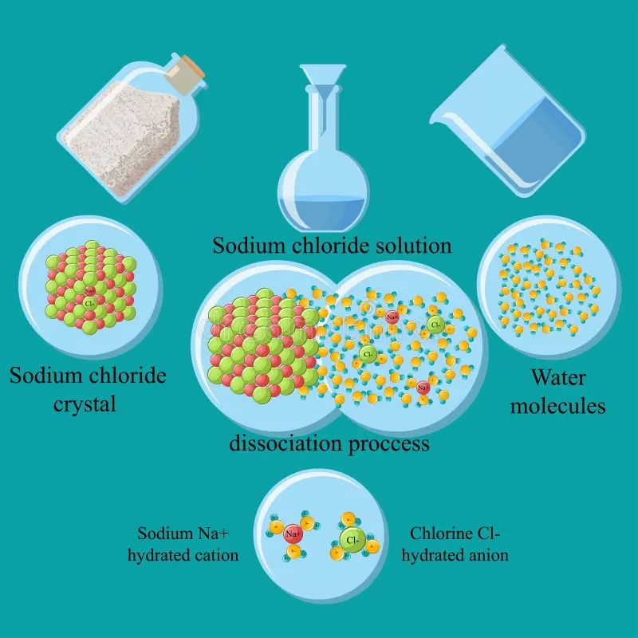
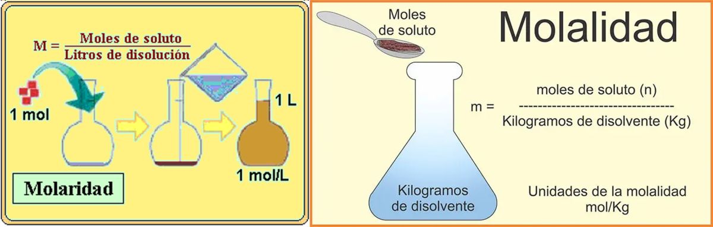

QUÍMICA II
La ciencia que conecta ideas
Clase 4: Unidades de Concentración Química
La ciencia que conecta ideas
Clase 4: Unidades de Concentración Química
En todo sistema homogéneo (disolución), el solvente es el componente que define el estado físico de la solución (sólido, líquido o gaseoso) y, por lo general, se encuentra en mayor proporción. El soluto es la sustancia disuelta, presente en menor cantidad, que se dispersa a nivel molecular o iónico en el solvente.

Figura 1: Proceso de solvatación. El solvente (agua) rodea y separa los iones del soluto (NaCl).
La fracción molar es una unidad de concentración que expresa la relación entre el número de moles de un componente y el número total de moles en la mezcla.
Para un soluto $A$ y un solvente $B$:
$$X_A = \frac{n_A}{n_A + n_B}$$ $$X_B = \frac{n_B}{n_A + n_B}$$Donde $n_A$ y $n_B$ son los moles del soluto y solvente respectivamente. La suma de todas las fracciones molares en una solución siempre es igual a 1 ($X_A + X_B = 1$).
La molaridad es la unidad de concentración más utilizada en química analítica. Se define como el número de moles de soluto por litro de solución.
$$M = \frac{n_{soluto}}{V_{solución} (L)}$$Para calcular los moles de soluto a partir de la masa:
$$n = \frac{masa (g)}{Masa Molar (g/mol)}$$El ácido sulfúrico concentrado es $H_2SO_4$ al 98% en masa. Calcule la molaridad de la solución. La densidad de la solución es $1.83 \text{ g/ml}$.
1. Base de cálculo: 100 g de solución.
2. Calcular moles de soluto:
$$n_{H_2SO_4} = \frac{98 \text{ g}}{98 \text{ g/mol}} = 1 \text{ mol}$$3. Calcular volumen de la solución:
$$V = \frac{masa}{densidad} = \frac{100 \text{ g}}{1.83 \text{ g/ml}} = 54.64 \text{ ml}$$ $$V = 54.64 \text{ ml} \times \frac{1 \text{ L}}{1000 \text{ ml}} = 0.05464 \text{ L}$$4. Calcular Molaridad:
$$M = \frac{1 \text{ mol}}{0.05464 \text{ L}} = 18.3 \text{ mol/L}$$Comprobación: $M = \frac{10 \times 98 \times 1.83}{98} = 18.3 \text{ M}$
A diferencia de la molaridad, la molalidad relaciona los moles de soluto con la masa del solvente puro en kilogramos, no con el volumen de la solución.
$$m = \frac{n_{soluto}}{kg_{solvente}}$$El volumen de una solución se expande o contrae con los cambios de temperatura. Sin embargo, la masa no varía. Por ello, la molalidad es estrictamente independiente de la temperatura. Es la unidad preferida en estudios termodinámicos, coligativos (descenso crioscópico, ósmosis) y criogenia.

Figura 2: Diferencia conceptual. Molaridad depende del volumen total (L solución), Molalidad depende de la masa del solvente (kg).
La normalidad mide la capacidad de reacción de una solución. Se define como el número de equivalentes de soluto por litro de solución.
$$N = \frac{\text{Nº de equivalentes}}{V_{solución} (L)}$$Y se relaciona con la molaridad mediante el factor $\Theta$ (Theta), que representa el número de unidades reactivas por molécula:
$$N = M \times \Theta$$ $$\text{Nº equivalentes} = \text{Nº moles} \times \Theta$$| Tipo de Reacción | Definición de $\Theta$ | Ejemplo |
|---|---|---|
| Ácido-Base | Nº de iones $H^+$ o $OH^-$ donados/aceptados | $H_2SO_4 \rightarrow \Theta = 2$ |
| Redox | Nº de electrones transferidos | $KMnO_4 \rightarrow Mn^{7+} \text{ a } Mn^{2+} \Rightarrow \Theta = 5$ |
| Sales | Carga total del catión o anión | $CaCl_2 \rightarrow Ca^{2+} \Rightarrow \Theta = 2$ |
Es el proceso físico de agregar más solvente a una solución. La concentración final disminuye, pero la cantidad absoluta de soluto permanece constante.
$$n_{inicial} = n_{final}$$En unidades de Molaridad:
$$M_i \cdot V_i = M_f \cdot V_f$$Donde $V_f = V_i + \text{Volumen de agua añadido}$
En unidades de Normalidad:
$$N_i \cdot V_i = N_f \cdot V_f$$Ejemplo 1: Si a 400 mL de una solución acuosa de $NaOH$ $2N$ se le agregan 150 mL de agua. ¿Cuál será la Normalidad resultante?
$V_f = 400 \text{ ml} + 150 \text{ ml} = 550 \text{ ml}$
$N_1 \cdot V_1 = N_2 \cdot V_2$
$2N \times 400 \text{ ml} = N_2 \times 550 \text{ ml}$
$N_2 = \frac{800}{550} = 1.4545 \text{ N}$
Consiste en combinar dos o más disoluciones del mismo soluto con diferentes concentraciones. La concentración resultante será intermedia.
En Molaridad: $M_1 \cdot V_1 + M_2 \cdot V_2 = M_3 \cdot V_3$
En Normalidad: $N_1 \cdot V_1 + N_2 \cdot V_2 = N_3 \cdot V_3$
Ejemplo 2: Calcular la molaridad de mezclar 200 ml de $NaOH$ $0.22M$ con 300 ml de $NaOH$ $0.75M$.
$M_3 = \frac{M_1 \cdot V_1 + M_2 \cdot V_2}{V_3}$
$V_3 = 200 \text{ ml} + 300 \text{ ml} = 500 \text{ ml}$
$M_3 = \frac{(0.22 \times 200) + (0.75 \times 300)}{500}$
$M_3 = \frac{44 + 225}{500} = \frac{269}{500} = 0.538 \text{ M}$
Haz clic en cada nodo para desplegar las ramas conceptuales.
Haz clic en la tarjeta para voltearla y comprueba tu conocimiento.
Utiliza la fórmula $M = \frac{10 \times \%peso \times densidad}{Masa Molar}$
Utiliza la fórmula $M_1 \cdot V_1 = M_2 \cdot V_2$
La mezcla de soluciones es crítica en hospitales. Si se mezclan dos bolsas de suero fisiológico ($NaCl$) de distintas concentraciones para adecuar la osmolaridad a un paciente, se aplica estrictamente la fórmula $M_1V_1 + M_2V_2 = M_3V_3$ para evitar hemólisis o crenación de los glóbulos rojos.
El calcio sérico ($Ca^{2+}$) suele reportarse en mg/dL, pero su reactividad fisiológica se entiende mejor en mEq/L (miliequivalentes). Como el calcio tiene $\Theta=2$, 1 mmol de calcio equivale a 2 mEq. La Normalidad estandariza la capacidad de reacción iónica en electrólitos sanguíneos.

Figura 3: Cálculo de concentraciones en terapias intravenosas para garantizar isotonicidad.
Molaridad tiene una "r" de "Recipient" (volumen en un recipiente). Molalidad tiene una "l" de "Líquido puro" (masa del solvente puro en kg).
Para recordar $M_i \cdot V_i = M_f \cdot V_f$, piensa en "Mi Vi before Vi Fin". La cantidad de soluto que tenías al inicio (Mi x Vi) es la misma que terminas teniendo al final (Mf x Vf).
En molaridad, el denominador es el volumen TOTAL de la solución, no del solvente añadido. Al mezclar 1L de agua con 1L de etanol, el volumen final no es exactamente 2L debido a la contracción de volumen por fuerzas intermoleculares.
En la mezcla de soluciones de concentraciones distintas, asumir siempre que $V_3 = V_1 + V_2$ sin tener en cuenta que los volúmenes no son perfectamente aditivos.